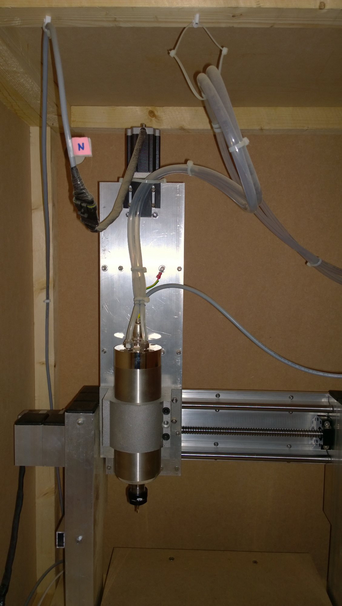
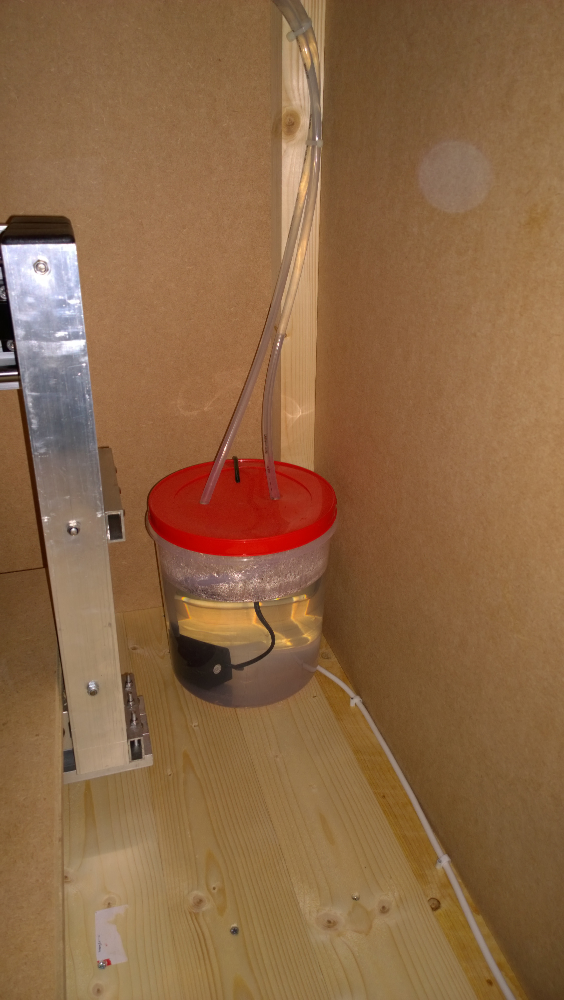
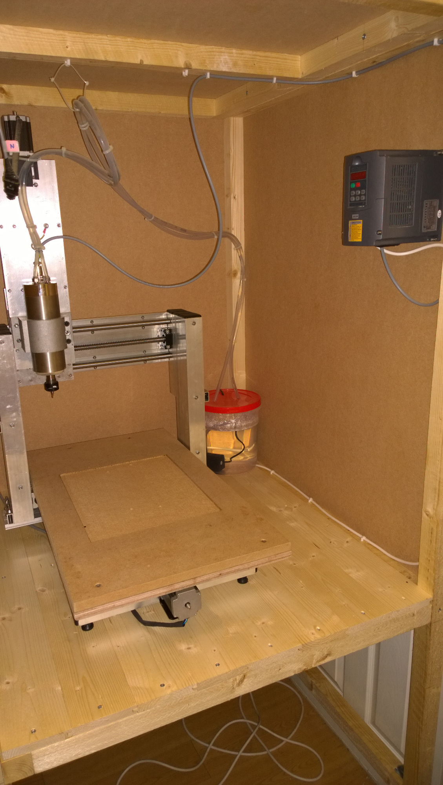
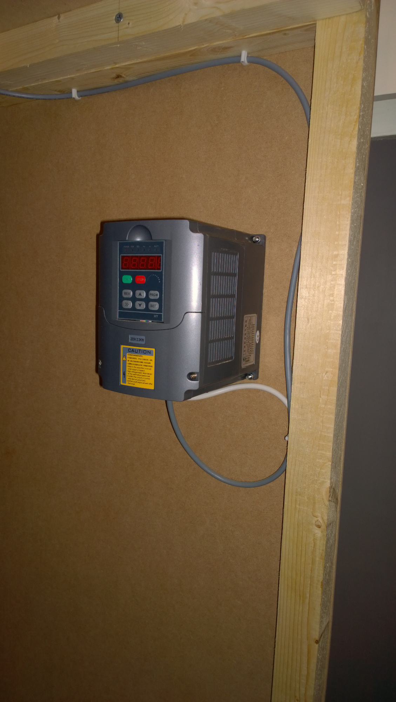

CNC DIY Build: Design | Electronics | Gantry | Assembly | Z-Axis | Spindle | Software
Spindle Wiring and Cooling
From my reading and subsequent experience, it seems that these Chinese spindles do not require a very high coolant flow to keep the temperatures down. I used a small aquarium pump (rated 550LPH) in a 10 litre container of water and it seems to work okay.
As with the steppers, the wiring from the VFD to the spindle should be shielded and sufficiently rated for the current being used. Wiring details will depend on your spindle. An unused wire within this cable was earthed at the VFD and attached to the mill body to earth that.




Return to home page.